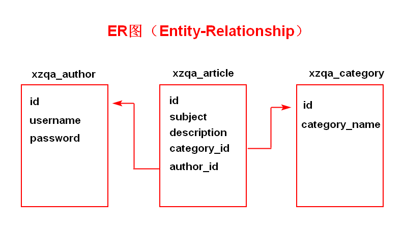
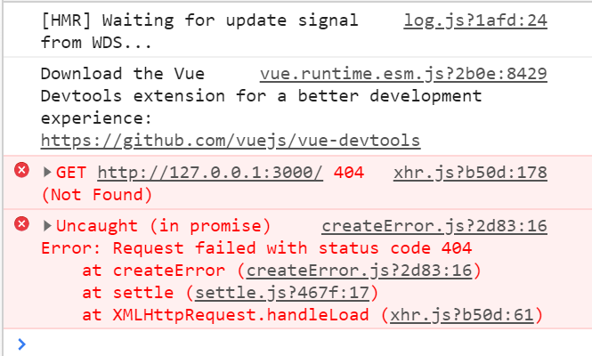
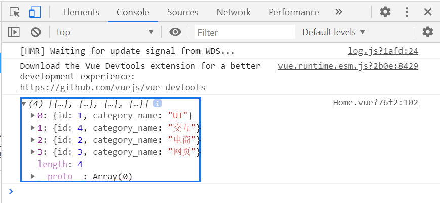

MintUI-- Unit03
1.学子问答的数据表结构
数据库名称xzqa，编码方式 utf8
1.1 xzqa_category
xzqa_category数据表用于存储文章的分类，数据表结构如下：
| 字段名称 | 数据类型 | 是否为空 | 默认值 | 键 | 其他 | 说明 |
|---|---|---|---|---|---|---|
id | SMALLINT UNSIGNED | NO | PRIMARY KEY | AUTO_INCREMENT | 文章分类ID | |
category_name | VARCHAR(30) | NO | UNIQUE KEY | 分类名称 |
1.2 xzqa_author
xzqa_author数据表用于存储作者的相关信息，数据表结构如下：
| 字段名称 | 数据类型 | 是否为空 | 默认值 | 键 | 其他 | 说明 |
|---|---|---|---|---|---|---|
id | MEDIUMINT UNSIGNED | NO | PRIMARY KEY | AUTO_INCREMENT | 作者ID | |
username | VARCHAR(30) | NO | UNIQUE KEY | 用户名 | ||
password | VARCHAR(32) | NO | 用户密码,采用MD5 | |||
nickname | VARCHAR(30) | YES | NULL | 用户昵称 | ||
avatar | VARCHAR(50) | NO | unnamed.jpg | 用户头像 | ||
article_number | MEDIUMINT UNSIGNED | NO | 0 | 用户发表的文章数量 |
1.3 xzqa_article
xzqa_article数据表用于存储文章信息，数据表结构如下：
| 字段名称 | 数据类型 | 是否为空 | 默认值 | 键 | 其他 | 说明 |
|---|---|---|---|---|---|---|
id | INT UNSIGNED | NO | PRIMARY KEY | AUTO_INCREMENT | 文章ID | |
subject | VARCHAR(50) | NO | 文章标题 | |||
description | VARCHAR(255) | NO | 文章简介 | |||
image | VARCHAR(50) | YES | 文章缩略图 | |||
content | MEDIUMTEXT | NO | 文章正文 | |||
category_id | SMALLINT UNSIGNED | NO | 文章分类ID,外键，参照分类表中的ID字段 | |||
author_id | INT UNSIGNED | NO | 作者ID，外键，参照料作者表中的ID |
数据表的ER图如下：

1.4 MySQL数据的导入
A.先启动XAMPP，再启动MySQL,最后单击Shell按钮

B.在命令提示符下输入以下命令：
mysql -uroot -p < SQL脚本文件的位置及名称2.学子问答项目的实践
2.1 顶部选项卡的实现
对于顶部选项卡的数量有两种实现方式：
A.静态的，指在书写<mt-navbar>时固定好其中包含的<mt-tab-item>的数量及内容
B.动态的，指<mt-navbar>中包含的<mt-tab-item>的数量及内容是数据表决定的
在学子问答项目中包含的xzqa_category数据表用于存储文章的分类，所以其用作决定顶部选项卡的数量及内容。
· 在什么情况发向WEB服务器发送请求以获取分类信息?
涉及Vue生命周期的钩子函数：beforeCreate、created、beforeMount、mounted、beforeUpdate、updated、beforeDestroy、destroyed
现在将采用 mounted 钩子函数触发时，发送请求到WEB 服务器，于是在Home.vue中进行如下修改，示例代码如下：
x
<script>export default{ mounted(){ // }} </script>现在既然要向WEB服务器发送请求，请问通过什么来发送请求呢？-- 通过axios发送请求
但是，现在需要进行axios的安装与配置才可以使用，所以：
A.安装Axios
npm install --save axiosB.配置 -- main.js文件内
x
//导入Axios模块import axios from 'axios';//配置Axios的基础地址axios.defaults.baseURL = 'http://127.0.0.1:3000';//在Vue的原型上扩展属性Vue.prototype.axios = axios;在学子问答项目案例中，
Node.js服务器端口为3000
经过上述的操作，已经完成了Axios的安装与配置，现在可以Home.vue的mounted钩子函数中发送请求了，示例代码如下：
xxxxxxxxxx<script>export default{ mounted(){ this.axios.get('/'); }} </script>此时脚手架的运行结果如下图所示：

产生上述错误的原因是：根本没有WEB服务器
· 创建Node服务器
脚本架在发送请求时，指定协议名称为HTTP，所以必须在Node服务器上安装express框架：
npm install --save express安装成功后，在服务器的根目录下创建app.js，示例代码如下：
//引入Express模块const express = require('express');//创建Express实例const server = express();//指定服务器的监听端口号server.listen(3000);在VSCode编辑器的终端中输入 node app.js
此时脚手架的运行结果如下图所示：

此时出现的错误原因是：脚手架的端口号与服务器端口号不一致而导致的跨域错误！所以：
· 解决Node服务器的跨域错误
在Node服务器上安装CORS模块并且进行配置：
第一步：安装
npm install --save cors第二步：配置
//引入Express模块const express = require('express');//引入CORS模块const cors = require('cors');//创建Express实例const server = express();//将CORS作为Server的中间件使用server.use(cors({ origin:['http://127.0.0.1:8080','http://localhost:8080']}));//指定服务器的监听端口号server.listen(3000);第三步：重新启动Node服务器
此时脚手架的运行结果如下：

现在产生错误的根本原因是：没有对应的API地址
· 书写获取全部文章分类信息的API
规定：获取全部分类信息的API地址为 -- /category，请求方式为GET
所以现在必须在Node服务器上创建/category的API,并且请求方式为GET，其基本结构如下：
x
server.get('/category',(req,res)=>{ });在当前的/category API地址中要获取数据库中xzqa_category数据表的记录，所以还必须安装MySQL模块，同时进行相关的配置：
第一步：安装MySQL模块
x
npm install --save mysql第二步：配置MySQL模块
//引入MySQL模块const mysql = require('mysql');//创建MySQL连接池const pool = mysql.createPool({ //数据库服务器地址 host:'127.0.0.1', //数据库用户名 user:'root', //数据库用户密码 password:'', //数据库服务器端口号 port:3306, //数据库名称 database:'xzqa', //编码方式 charset:'utf8', //连接限制 connectionLimit:15});第三步：在/category请求API中，获取数据表的记录并且返回到客户端(脚手架)，示例代码如下：
x
//获取所有文章分类信息的APIserver.get('/category',(req,res)=>{ //SQL查询语句 let sql = 'SELECT id,category_name FROM xzqa_category'; //执行SQL查询语句 pool.query(sql,(err,results)=>{ if(err) throw err; //响应到客户端的信息 res.send({message:'查询成功',code:1,results:results}); });});第四步：重新启动Node服务器
此时脚手架的运行结果如下：

现在已经证明服务器返回了客户端期望的结果！！！
但是客户端还没有接收并且在页面组件中显示该结果信息，所以：
· 在客户端接收并显示显示信息
在刚刚发送请求的代码如下：
xxxxxxxxxxmounted(){ this.axios.get('/category');}所以现在要接收服务器返回的数据了，示例代码如下：
xxxxxxxxxxmounted(){ this.axios.get('/category').then(res=>{ console.log(res.data.results); });}此时脚本架的运行结果如下：

这些数据最终要在页面组件显示的话，必须将其存储Vue的一个变量中，然后再通过v-for指令进行循环输出就可以了，所以：
xxxxxxxxxxdata(){ return { //用于存储文章分类信息 category:[] }}另外在mounted的钩子函数中应该将服务器返回的数据存储到Vue变量中，示例代码如下：
xxxxxxxxxxmounted(){ this.axios.get('/category').then(res=>{ this.category = res.data.results; });}最后通过v-for指令来动态决定<mt-tab-item>的数量及内容，示例代码如下：
x
<mt-navbar v-model="active"> <mt-tab-item :id="item.id" v-for="(item,index) of category" :key="index"> {{item.category_name}} </mt-tab-item> </mt-navbar>最后当循环输出之后发现没有任何一个顶部选项卡被选定，根本原因是因为：active变量原来为字符串类型，而现在为数字类型的，所以：需要将原来的active变量的默认值由字符串类型的"1"，改为整数 1 即可。
扩展一步：
面板的数量与顶部选项卡的数量是一致的，所以也应由category变量动态来决定面板的数量，故：
x
<mt-tab-container v-model="active"> <mt-tab-container-item :id="item.id" v-for="(item,index) of category" :key="index"> <!-- 单一文章信息开始 --> <div class="InfoItem"> ... </div> <!-- 单一文章信息结束 --> </mt-tab-container-item></mt-tab-container>作业：
A.推倒重写
B.文章列表的业务功能